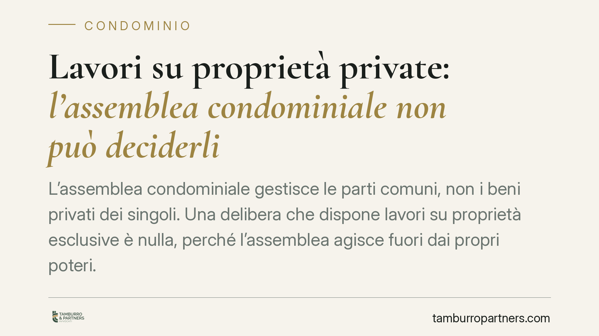

Lavori su proprietà private: l'assemblea condominiale non può deciderli
L'assemblea condominiale gestisce le parti comuni, non i beni privati dei singoli. Una delibera che dispone lavori su proprietà esclusive è nulla, perché l'assemblea agisce fuori dai propri poteri. Né i bonus fiscali né le ordinanze comunali ampliano questo perimetro. Vediamo quando una delibera eccede i limiti e come reagire correttamente.

Il punto: dove finiscono i poteri dell'assemblea
L'assemblea è l'organo che governa il condominio, ma i suoi poteri hanno un confine preciso: le parti comuni dell'edificio. Quando una delibera dispone interventi su beni di proprietà esclusiva di un singolo condòmino, l'assemblea esce dai propri binari.
La conseguenza non è un semplice vizio di forma. Si tratta di un difetto assoluto di attribuzioni: l'assemblea decide su una materia che la legge non le affida. La delibera è quindi nulla, non soltanto annullabile.
Inquadramento normativo
L'art. 1117 del Codice civile individua le parti comuni dell'edificio: suolo, fondazioni, muri maestri, tetti, scale, androni e, in generale, tutto ciò che serve all'uso comune. Su questi beni l'assemblea può deliberare manutenzione e gestione.
L'art. 1135 c.c. elenca le attribuzioni dell'assemblea, tra cui l'approvazione delle opere di manutenzione straordinaria sulle parti comuni. Le innovazioni seguono invece la disciplina specifica dell'art. 1120 c.c. In nessuna di queste norme compare il potere di disporre lavori su beni che appartengono in via esclusiva ai singoli.
La distinzione tra delibera nulla e delibera annullabile è stata ricostruita in modo organico dalla Corte di Cassazione a Sezioni Unite (sentenza comunemente individuata nella n. 9839 del 2021, il cui riferimento va confermato prima di ogni uso ufficiale). In sintesi: sono nulle le delibere prive degli elementi essenziali, con oggetto impossibile o illecito, o che incidono su diritti individuali come la proprietà esclusiva; sono invece annullabili quelle affette da vizi procedurali o di convocazione.
La differenza è rilevante sul piano pratico. La delibera annullabile va impugnata entro 30 giorni ai sensi dell'art. 1137 c.c., trascorsi i quali diventa definitiva. La delibera nulla, al contrario, può essere fatta valere da chiunque vi abbia interesse, senza termini di decadenza, perché il vizio è radicale.
Perché questo tema conta
Il problema emerge spesso quando l'assemblea tenta di coordinare interventi che toccano anche porzioni private: rifacimento di balconi di proprietà esclusiva, sostituzione di infissi, lavori su lastrici solari in uso esclusivo.
La buona intenzione – uniformare l'estetica dell'edificio o cogliere un'occasione di risparmio – non sana il vizio. Se il bene è privato, l'assemblea non può imporre l'intervento né ripartirne il costo sul condominio. La giurisprudenza di merito più recente ha ribadito questo principio, confermando la nullità delle delibere che invadono la sfera della proprietà esclusiva.
Bonus fiscali e ordinanze comunali non ampliano i poteri
Un equivoco frequente riguarda gli incentivi edilizi. Il fatto che una detrazione fiscale sia più vantaggiosa se gestita in forma condominiale non trasforma un bene privato in parte comune. Il regime fiscale è una cosa, la titolarità del bene un'altra.
Lo stesso vale per le ordinanze comunali. Se il Comune ordina al proprietario di un balcone pericolante di metterlo in sicurezza, il destinatario dell'obbligo resta il proprietario privato. L'assemblea non eredita quel potere né quell'obbligo per il solo fatto dell'ordinanza.
Cosa fare in concreto
- Verificate la titolarità del bene prima di deliberare. L'amministratore controlli regolamento e titoli: se l'intervento riguarda una proprietà esclusiva, la materia esce dalla competenza assembleare.
- Acquisite il consenso dei singoli interessati. Per i lavori su beni privati serve l'accordo individuale dei proprietari, con un'intesa distinta dalla delibera sulle parti comuni.
- Separate le voci di spesa. Distinguete sempre i costi relativi alle parti comuni da quelli di competenza dei singoli, per evitare ripartizioni illegittime.
- Valutate la natura del vizio prima di impugnare. Se la delibera è annullabile, il termine di 30 giorni è perentorio; se è nulla, l'azione resta esperibile, ma è comunque prudente intervenire tempestivamente.
- Non confondete convenienza fiscale e competenza. Consigliamo di gestire gli incentivi sui beni privati con accordi ad hoc tra i proprietari coinvolti, senza forzare la competenza assembleare.
In sintesi
L'assemblea decide sulle parti comuni. Quando invade la proprietà esclusiva, la delibera è nulla per difetto assoluto di attribuzioni. Né i bonus né le ordinanze spostano questo confine. Riconoscere per tempo la natura del vizio evita contenziosi e ripartizioni di spesa illegittime.
---
Contributo informativo a cura di Tamburro & Partners - Avv. Giuseppe Tamburro. Non costituisce parere legale.
Ogni condominio ha una storia a sé.
Se gestisci un'amministrazione e vuoi un confronto su una specifica questione condominiale, scrivi allo studio. Ti rispondiamo entro un giorno lavorativo.